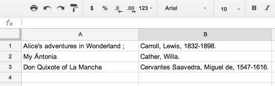
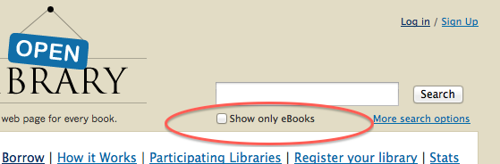
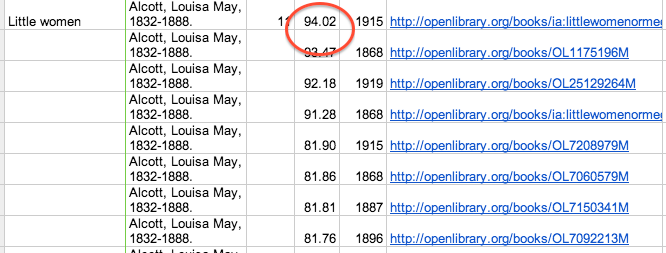
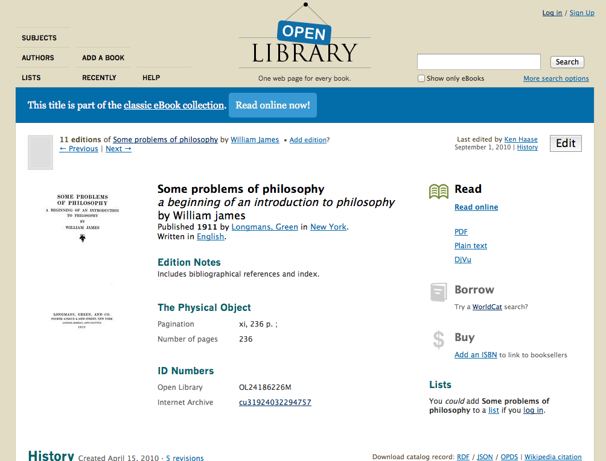

Adding Free e-Books to the Library Catalog
This project was supported by a Library Services and Technology Act (LSTA) granted to Santa Clara County Library District (SCCLD) from the California State Library to fund the exploration of the effect of including public domain e-books in the library's catalog for discovery by users, and to observe whether e-book use would increase for the selected books. The project was conducted between July 2013 and June 2014. The resulting software is available as Open Source at https://github.com/galecia/openlibrary-utils
Background
There exist today a number of sources of free, open e-books: Project Gutenberg, Google, Internet Archive, HathiTrust, and others. While some savvy users know to look for these, others are unaware that the book they may be seeking is available at one of these sites. It is also the case that the books most sought by readers are not easy to find among the many millions of digital books in these online databases, not only because of the size of the database but because there is often a mix of public domain books and books that are restricted by copyright.
The circulation of e-books protected by copyright and vendor licenses is a complex function that cannot be performed by the library catalog or circulation module without considerable time and effort, which most libraries choose not to pursue.. Instead, e-books are delivered through a vendor system that is outside of the library. To suport this, e-book vendors create a separate interface for library patrons to use to discover and obtain the e-books. The confusion generated by these multiple e-book interfaces (each e-book vendor has their own), was reduced somewhat when the e-book vendors began providing MARC records so that patrons could discover e-books inside the library catalog. The links in those MARC records still took the user to the vendor interface for e-book selection and check-out.
The vendor system, which primarily prevents users from making usable copies of e-books outside of the digital rights management system, is unnecessary for public domain e-books, which can be freely distributed with no rights management controls, and can be freely copied by users. However, like the early vendor e-book systems, these sources of e-books are not integrated with the library catalog, and therefore users are generally unaware that the source exists, and are not made aware of the availability of specific titles through the library catalog.
Just as it has become clear that the use of purchased e-books use is increased when patrons are able to discover them through catalog searches, it is also highly likely that use of open access e-books could be increased if records for desirable titles were inside the library catalog. Open access books include those books considered "classics" up to the early 20th century (such as the books of Jane Austen or Mark Twain), as well as still relevant non-fiction in philosophy, history and science.
The Free e-Books Project
The Santa Clara County Library District (SCCLD) LSTA-funded project was designed to test the effect of including public domain e-books in the library's catalog. One critical goal of the study was that users would download the open access e-book directly within the library catalog interface, without being sent to a site outside of the library. In particular, the study had the following goals:
1. Discover and Download e-Books Without Leaving the Catalog
While other e-books services may include some of these same open access titles, most links to e-books direct patrons to the e-book provider's interface to obtain the e-book. This means that users leave the library catalog and encounter a visibly different site outside of the library. Users may not perceive the library as the source of these e-books, or may be unclear as to their relationship with the entity providing the e-books. SCCLD particularly wanted users to obtain e-books directly from the library catalog environment with which users are familiar.
The LSTA grant project, Evaluating Effect of Adding Free e-books to the Library Catalog, has developed a way to add selected open access e-books to the library catalog without requiring the patron to leave the library catalog and without requiring the patron to "check-out" the item. Since these titles are in the public domain, each user can download their own copy and keep it or even share it with others. Users also do not need to provide their library card number for the download, which means that this is a service open to all.
2. Selectively Add Titles to the Library's Collection
Through this grant, SCCLD was able to create automated scripts that will find editions of titles in Open Library and retrieve the related MARC record to be loaded into the library's catalog. The e-books used for this project come from the Internet Archive, whose user interface is the Open Library. The Internet Archive contains over one million free e-books. The e-books are available in a variety of e-book formats, and many of the e-books have an associated MARC record. However, the majority of the e-books available through the Internet Archive are not considered classic works of literature. It was therefore important to develop a mechanism that allowed libraries to identify the specific titles they'd like to include in their collection. A list of the titles available at SCCLD can be found at http://www.sccl.org/classics
Through the usage statistics that were gathered during the project, SCCLD discovered that patrons immediately were finding and downloading the ebook classic records in the catalog. In March, 2014, the first full month of data, 300 ebooks had been downloaded, with a good blend of ePub and Kindle, and very few other formats. By May of that year, usage had jumped to over 750 downloads per month. This proved the point that patrons will find materials if they are in the catalog, and that they find them easy to use and will download them. Survey results expressed keen interest in the titles, and the hope is that more titles would be added. Statistics on use can give collection development staff information on demand for open e-books, and staff can add other open e-books to the catalog to meet this demand.
Step-by-Step Project Workflow
The following sections describe the process undertaken by SCCLD in its project, and which may be used by other libraries or modified as needed. All of the programs developed for the project are available at [??Tom??]. This description is intended to provide enough detail to help other libraries determine their own workflow.
1. Create a List of Desired Titles
In order for a library to make use of the SCCLD scripts that search the Open Library for titles to add to their collection, they must first generate a list of titles and authors that they'd like to add to their collection. These can be titles the library already holds in hard copy, or it can be additions to the library's collection.
The author/title list of desired titles that the library creates is entered into a spreadsheet with a separate column for authors and titles. SCCLD used Google Docs for this as it allowed staff members to easily share the work on the list, but any spreadsheet program would suffice.

These fields can be copied from entries in the library catalog. It is not necessary to include the full authority-controlled form of the author name to obtain matches. This may be especially useful when including on the list books the library does not already have in its catalog. The spreadsheet is then input to the program that will search for these books in Open Library.
Before starting, you may want to familiarize yourself with the Open Library collection. When searching for particular titles, you can add the filter to show only e-books, but this includes both public domain and protected e-books. You can retrieve the entire set of Open Library public domain books at https://openlibrary.org/read. However, note that this is a list of about one million digital books.

2. Select Editions
The spreadsheet is input to a program that searches the Open Library by author and title and returns results with links to the Open Library entries. These results are stored by the program spreadsheet format. (If using Google Docs, all of the input and output takes place in the same spreadsheet.) In many cases there is more than one result returned because popular classics have often been published in numerous editions, and more than one edition has been digitized. From the list of results, entered into the same spreadsheet, the library must choose which edition or editions they wish to add to their catalog. The results include an estimate of the quality of the OCR (optical character recognition) process that was undertaken when the item was added to the Internet Archive. This number is output from the OCR program when it was originally run. It was the judgment of the SCCLD staff that this measurement generally did identify the most readable copy of the book, and in most cases SCCLD staff chose editions with the highest OCR rating to add to their database.

Other criteria may be used to select books, for example a library may prefer first editions or illustrated editions. The results list includes the link to the Open Library page for the e-book so that staff can look at metadata for individual editions or download the e-book itself.
Selection is done by copying the URL for the selected edition to another column in the spreadsheet. This column is then input to a program that retrieves the associated MARC record from the Internet Archive.
3. Modify the MARC Record
Once a specific title and edition is selected, a MARC record is generated for the library catalog with software developed for the project. The MARC records stored are stored at the Internet Archive associated with the e-book. These records are often provided by the library whose edition was digitized. Note that not every e-book on the Open Library has a MARC record. If a MARC record does not exist, the SCCLD project did not select the title. (There has been some discussion with the Internet Archive of adding MARC records where they do not exist, but this was outside the scope of our project.)
The Open Library has a standard export format for the MARC record for the e-book, which is derived from the record for the hard-copy that was digitized. This exported record is coded for the e-book in the 007 field and contains the appropriate 245 $h subfield.
Here's a sample exported MARC record for the e-book before it has been modified with the library's preferences.
LEADER: 01713nam 2200373 4500
005 20060625140956.0
007 cr||||||||||||
008 740606s1920 j 0 1 eng
010 $a 20015592
020 $a0553211285 (pbk.) :$c$5.00
035 $a003290353$bGB
035 $a740239288
040 $dUtOrBLW
091 $pJ$aFIC$cT
100 1 $aTwain, Mark,$d1835-1910.
245 14 $aThe adventures of Tom Sawyer,$h[electronic resource]$cby Mark Twain.
260 $aNew York,$cc1920.
520 $aThe adventures and pranks of a mischievous boy growing up in a Mississippi River town in the early nineteenth century.
650 0 $aBoys$zMissouri$vFiction.
651 0 $aMississippi River$vFiction.
856 41 $uhttp://archive.org/details/adventuresoftoms00twai2$zFree e-book from the Internet Archive
856 42 $uhttp://www.openlibrary.org/books/OL7183411M$zAdditional information and access via Open Library
Primarily, the library needs to decide what linking fields (856) are desired, and how these should display in the catalog.
There are two links in the default MARC record. The first takes the reader to the Internet Archive page about the e-book with all of the information about the book.
(Click for full page view.)
The second links to the Open Library page for the e-book:

The SCCLD project wanted to lead users directly to an e-book download. SCCLD also had examined the popularity of formats by its users, and determined that by far, ePub and Kindle formats were more used than any other ebook format. Because of this, they decided to include three 856 fields: the first link goes to the the ePub version of the edition on Internet Archive, another to the Kindle link, and a third link takes the reader to a page on the Internet Archive where all the formats are available.
The e-book formats available from the Internet Archive are:
- ePub
- Kindle
- Daisy
- Text
- DjVu
- Web-based book reader
What Libraries Need to Do to Get Started
1. System Requirements
Before a library begins, the following elements should be considered:
- What input formats can your library cataloging system take in? Common formats are MARC21 and MARCXML, but your system may also take in MARCEdit edit format, or others.
- What 856 subfields are used for the user-display?
- In which displays are 856 fields included? (e.g. results list, short display, long display)
- If you wish your 856 fields to display in a particular order, determine if your ILS vendor sorts or re-orders fields before they are displayed. If so, you may have options to manage the display order.
Once these questions have been answered, performing some test loads of a small number of records would be beneficial to ensure that the import actually works and is compatible with the library's specifications.
2. Cataloging Choices
The original study was done in a catalog that used the "separate record" method. When the library added an e-book version of a print book that they already had, each was represented by its own record in the library database. For libraries that use the "single record" method (adding links to e-books on the print book record), moving the 856 fields from the incoming MARC record to the library's print book record is not automated in the software developed here.
3. Modifications to the MARC Format
As mentioned above, the MARC record as output from the Internet Archive has two 856 fields that would usually display as:
Free e-book from the Internet Archive
Additional Information and access via Open Library
Both of these lead the user to a page outside of the library catalog. If you prefer to give users a direct link to one or more e-book formats, this can be coded in the program that processes the record after it is downloaded from the Internet Archive. The format of the URLs for individual e-book formats is:
https://archive.org/download/[OL identifier]/[OL identifier]/[OLidentifier].[e-bookFormat]
An example of three different e-book types for a single edition:
https://archive.org/download/adventuresalices00carrrich/adventuresalices00carrrich.epub
https://archive.org/download/adventuresalices00carrrich/adventuresalices00carrrich.pdf
https://archive.org/download/adventuresalices00carrrich/adventuresalices00carrrich.mobi
The one exception to this is the link to Kindle books, since those must be downloaded through the Kindle service. The link pattern for Kindle books is:
https://www.amazon.com/gp/digital/fiona/web-to-kindle?clientid=IA&itemid=[OL identifier]&docid=[OL identifier]
Using the same book as the above examples, the Kindle edition URL is:
https://www.amazon.com/gp/digital/fiona/web-to-kindle?clientid=IA&itemid=adventuresalices00carrrich&docid=adventuresalices00carrrich
A library can choose to include links for all e-book formats, or only a select few. The SCCLD project decided to link directly to ePub and Kindle formats, and added a third link to the Open Library page that lists the remaining formats.
In addition to the URLs (that will be entered into the 856 $u subfield), a display message needs to be included in the 856 in the subfield used by your system for user display. This message can be anything you would like. The SCCLD decided to call these "Always available e-books", followed by the e-book format:
Your choice will require minor modification of the MARC record generation code.
4. Keeping Statistics on Use
If a library wishes to keep statistics on how often the links are followed, it must first determine if the library system can supply those. If not, a method was developed for the SCCLD project using the Bitly service that both creates shortened URLs and can provide reporting and analytics on selected URLs. These Bitly URLs must replace the original Open Library URLs in the 856 fields. If the library system can provide statistics on "clicks," or if there is not a need to quantify the use of the open access e-books, then one can use the Open Library URLs as described.